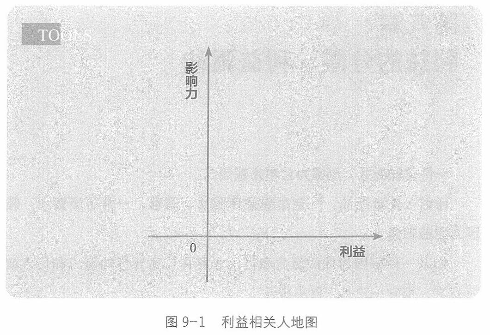

个区间，有人发挥负面的影响力。

一件事，看上去相关人众多，千头万绪，但如果把每个人都摆放到这张地图上，就会产生一种简洁的直观。
比如，结婚比恋爱难。因为恋爱只要两个人感受一致就可以，而结婚是两个家庭的选择，甚至多个家庭的利益相关人都要表态，如果不能取得共识，婚约就难成。
如果是大人物的婚姻，那么利益相关人地图上要摆放的人，还要多得多。
比如，肯尼迪会与谁结婚，有个影响力巨大的角色，就是肯尼迪家族的族长、肯尼迪的父亲老肯尼迪。他是一个立志把自己儿子送入白宫的野心人物，他的标准不是哪个女孩更美，而是哪个女孩更像能配合自己儿子的第一夫人。
杰奎琳识别出了老肯尼迪的影响力。于是，在众多取悦肯尼迪的
246